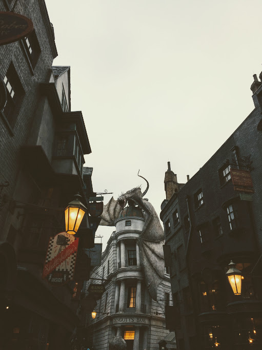

Miami
Beach, please.
Sun and sand-- these elements are very much appreciated coming from the Midwest. So, when in Miami, go to a beach and lay under a palm tree. Not only that, get a taste of histroic Art Deco architecture, delicious Cuban food, and some Miami heat.
Cuban espresso is called a cafecito. Get one of those and explore Ocean Drive. Art murals that comes to life for walls on walls are found at the Wynwood Walls-- definitely go there. Also, Coral Gables is a great place to see 4th of July fireworks if you want to avoid the chaos that ensues at South Beach.
Something about that Florida sunshine... If you're up for the drive, make some day trips to Orlando or Key West (plan ahead!) The Wizarding World of Harry Potter in Orlando is a no brainer for HP geeks. And Disney After Hours is certainly the way to go if you're a kid at heart. There are few lines in the evening, and free popcorn included with admission.
Key West can get a little expensive, but going to the southern most point of the U.S. is something to check off your bucket list. To get there, you cruise on Highway 1. It's just a very long, scary bridge over the ocean connecting the Keys. It's awesome, and worth a trip out from Miami.
Play
